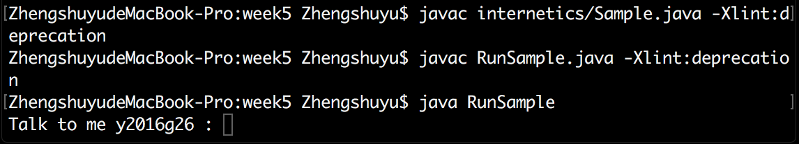

WEEK5
- Edit the Sample.java program so that the label (jLabel1) shows your group number.
I editted
jLabel1.setText("Group 26");in Sample.java to show my group number 26 on the label.
- Edit the RunSample.java program so that it runs with your group identity.
I editted
new internetics.Sample("y2016g26").setVisible(true);in RunSample.java to show my group identity. The original code wasnew internetics.Sample("y2016g26").show();, which caused a warning in java1.8.0. So I made a small change to silence the warning.
- Run the program and take a snapshot of the window it produces so that your group number can be clearly seen
Snapshot:
- Take a snapshot of the command window showing a prompt with your name. Snapshot: 
- Put the two images on your web site as homework for week 5.
- You need to replace the BufferedReader with a Scanner and link your code on your web page.
RunSample.java
Sample.java(the BufferedReader replaced by a Scanner)
- Edit the RunSample.java program so that it runs with your group identity.